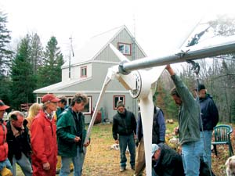
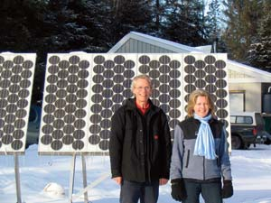
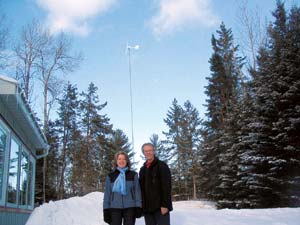
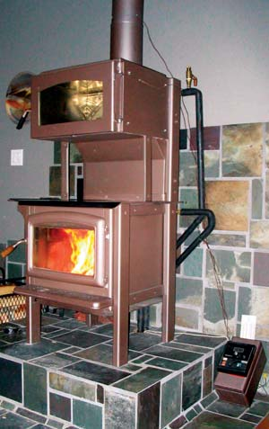
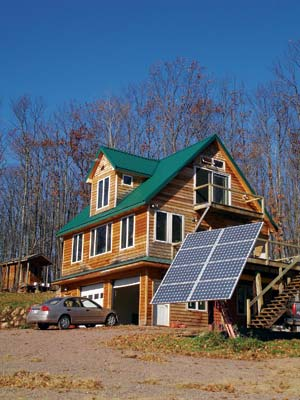
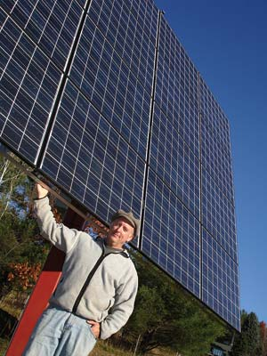

We began our journey toward household energy independence about eight years ago, and we now rely almost exclusively on wood, wind and solar energy to power and heat our home, offices and workshop. We still have grid electricity available at the flip of a switch, but we avoid using it unless we have to. This is a report from the front lines of our transition to renewables. Over the last eight years we’ve spent a lot of money and made some big mistakes. On the other hand, we’ve found that the challenges offer great learning opportunities, and the journey to energy self-sufficiency is endlessly engaging and deeply rewarding.
John: We embarked on this project with a few advantages. First, our house sits on 100 acres of bush (to call it a “forest” would overstate its quality) in rural Ontario, Canada, where there are no zoning or code restrictions on the use of renewable energies. Second, I’ve been in the renewable energy business for almost 30 years through my involvement with wood heating, and Wendy has done some of her academic research on renewable energy. We were both committed to the project from the start, which made it easier to get through the rough patches. Third, we started with no expectations of achieving a significant return on our investment, so we’ve treated the effort as a combination hobby and research project.
Wendy: A number of things converged in the fall and winter of 1997 to 1998 to shape not only my research on renewable energy but our own household conversion. After two decades working in public education, community development and women’s organizations, in the fall of 1997 I began to pursue a doctorate in the field of sustainable rural communities. I was interested in studying women’s participation in sustainability, and energy piqued my interest as a possible research focus. Then the ice storm of January 1998 struck the northeastern United States and eastern Canada. We were just on the edge of the most seriously damaged areas, but we were without electricity for four days, the roads were impassable, and after two days we were without telephone service when the utility’s battery backup system failed. It seemed like a signal that the time was right to immerse ourselves in renewable energy.
John: Although I had followed energy issues for a long time, concentrating on home energy these last few years has deepened my understanding. One insight I’ve gained is that the household, as a site of the production and consumption of energy, can be viewed as a microcosm of the global energy dilemma. That is, the energy problem is not a simple one to solve at either the household or global level, and it will take effort and creativity to do so.
Energy doesn’t come easily these days. A few decades ago, huge new oil fields were being discovered all over the world. In the past, oil companies could get 100 barrels of oil to sell by investing one barrel of oil in production costs. Today, the return on energy invested is closer to 10-to-1. We’re convinced that replacing oil and gas with other energy options as their reserves deplete will not be easy or cheap.
Our experience is that energy doesn’t come easily at home either. We have found the journey to household energy self-sufficiency challenging in many ways. These challenges often aren’t reflected in the upbeat articles on achieving home power and the seductive ads for solar panels and wind turbines.
Wendy: During my ongoing research with renewable energy users, I have found they have a surprising range of backgrounds and motivations. As I expected, many of the people I met were concerned with lightening their ecological footprint and reducing their dependence on oil and gas. I also met a handful of others who had less concern for environmental issues or conservation, but were instead motivated by religious beliefs or survivalism, and for whom independent energy systems met certain personal objectives.
Just as there is no single motivating factor for all renewable energy users, there may be more than one motivation within a household. Our house is a perfect example. While John revels in the intricacies of the technology, my interest in energy is more social, more about understanding energy in relation to people, politics, economics and the environment.
John: When we started down this path, my focus was on generating our own electricity at least partly because I was interested in the technologies. I resisted advice that the first thing we should do is analyze our electrical consumption, a task I found boring and unrewarding. I wanted to be the builder of an exotic system, not a parsimonious bean-counter with clipboard and calculator. This urge to obsess about electrical generating equipment rather than first changing our energy patterns was a mistake. I console myself with the knowledge that it is a near-universal trait of home energy newbies. Any solar and wind power dealer will tell you that the first task with new clients is to talk them out of their preconceived and wildly incorrect impressions about living with renewables.
Wendy: Drastically cutting our electricity consumption meant spending a lot of time thinking about energy, which seems to be the way of life for most renewable energy users. We check meters, adjust our tasks to the available energy and negotiate with each other whose task is more worthy of the power. This is a very different relationship to energy than for most North Americans. Conventional energy is ever-present, so easy and relatively cheap as to render it almost invisible. It takes no more effort than flipping a switch, spinning a dial or turning an ignition key. The upshot is that energy use has remained a largely unexamined activity in our everyday lives.
Living with limits to energy can be a challenge when getting ready for visitors and parties. I learned this early, and I learned it the hard way. Within weeks of switching over to 800 watts of solar power we had company coming for the weekend. As usual, I set off to vacuum our three story house top to bottom. Just as I made my way down to the first floor, the entire electrical system shut down when the batteries fell below a set level of charge. I obviously had a lot to learn. Overnight guests usually need some coaching on low-impact living. Our house is complicated, with an array of switches and rules for their use, few of the nonessential appliances, less light and variable access to hot water - not an easy transition for people used to on-demand energy.
Over the years we have worked toward more self-sufficiency as John has been cutting all our firewood and I have been slowly expanding our gardens to provide more of our food.
John: We had to make a number of big changes before we could even consider relying on our own power. First to go were the 220-volt electrical loads, because the inverter that converts power stored in batteries to alternating current for household use only produces 110 volts. We needed to swap out the kitchen range, well pump, electric furnace, water heater and clothes dryer. With the obvious energy hogs gone, we ended up with a propane range, a 110-volt well pump, an oil-fired water heater and a new “furnace” consisting of a radiator and fan unit that uses the water heater as its heat source. These unglamorous changes cost several thousand dollars, as well as a fair amount of time and effort. By far the cheapest conversion was from the electric clothes dryer to a clothes line.
At the time, compact fluorescent light bulbs were just coming on the market and cost up to $20 each. We spent several hundred dollars to replace almost every bulb in the house, a conversion that today would cost less than a quarter of what we invested.
Because of the cost involved, we waited several years to exchange our desktop computers, with their electrically hungry 20-inch monitors, for laptops that consume a fraction as much electricity.
I have come to understand that cutting big electrical loads and learning to live day to day with less electricity takes up more time and attention than installing solar panels or a wind turbine.
Wendy: I got a serious scare one sunny but bitterly cold winter morning when John was away. I was running our woodstove hard, and after getting the house up to a comfy temperature, I decided to take a shower and enjoy all the hot water the stove had produced.
But when I came downstairs after showering, I heard an ominous hissing and rumbling of water boiling in the system of pipes behind the woodstove. Just then a pipe burst and boiling water spewed onto the hearth and the living room floor. After quickly considering my options I raced to get a wheelbarrow. I shoveled the fire from the stove into the wheelbarrow and dumped it outside in the snow. Lucky for me, just an hour before the pipe burst the oil delivery truck had filled the tank of our rarely used backup heating system. That meant I didn’t have to spend the day watching the water in the living room freeze into a skating rink. John reworked the system shortly after that incident, and it has been working fine ever since.
John: I’ve come to think that our project on household energy independence will never be complete. After eight years and something like $60,000, we still don’t have enough electrical generating capacity to meet our current and future needs. Now I am building a 17-foot diameter, 3-kilowatt wind turbine to replace our 12-foot, 1-kilowatt unit. Our refrigerator, even though it is a fairly new model, is still not energy efficient enough. We plan to replace it and use the power savings to run a freezer to preserve some of our garden produce.
We’ve learned that the amount of sun and average wind speeds in our area are too low to make our site a good candidate for solar and wind systems. The average annual hours of sunshine here are around 1,800, meaning that only about 40 percent of daylight hours are sunny, which is low compared with drier regions. The average wind speed in our area is considered marginal at less than 5 meters/second (11 mph) at 100 feet above the ground. Acceptable would be considered 6.5 meters/second (14.5 mph), and excellent is around 8.5 meters/second (19 mph).
We are not alone in being in a lousy region for wind and sun. Huge swaths of North America are in the same situation. So it is fine for renewable energy promoters to say that wind and solar power may be suitable if your site meets particular criteria, but what about those of us who don’t meet the criteria? Are we to be satisfied using coal or nuclear electricity, with all the pollution and uncertainty that they entail? Must we move to windier and sunnier regions? Those were not acceptable options for this household. We just need more solar panels and a bigger wind turbine than people who live, say, on an oceanfront hilltop in sunny California. And yes, we also need a bigger budget.
These days the majority of new renewable energy users opt for a grid-tied or net metering deal with the electrical utility, in which the household supplies electricity to the grid when the sun shines and the wind blows, and draws from the grid when they don’t. This is a fine way to use renewables, but is a different proposition than our desire to disconnect. Grid-tying doesn’t provide as much incentive to conserve electricity, nor does it offer protection from power failures, which in our area are becoming more and more frequent. I also had concerns about the unequal relationship between our single household and a huge corporation. The utility serving our area is among the largest in North America and over the years its actions have shaken our confidence in its willingness to deal fairly with its customers on net metering.
Wendy: It is great to see more people questioning conventional energy practices and the effects they are having on the planet. People are also talking more about the potential of renewable energy these days. What we really need, though, is more people thinking about energy conservation and just learning to live with less. I think renewable energy users have a role to play in this transition to a more energy-literate citizenry by giving a realistic idea of what it is like to live with a modest amount of energy, whatever its source, and highlighting the many benefits that come with conservation.
Recently, I was reminded of some of these benefits. As we watched the turbine rise on its final lift on a neighbor’s homestead, the delighted owner turned to me and said, “It never occurred to me that it takes a community to raise a turbine tower.”
That observation contrasts sharply with the view of renewable energy households as somehow separate, independent, and even isolated from the local community. The language most often associated with renewables supports this perception. The phrases “off the grid,” “energy independence” and “energy security,” all evoke an image of disconnection from the community and from the larger political and corporate structures. But these words and the image of withdrawal tend to belie the complex role of renewables in our lives.
While using renewables has increased our independence and sense of security, and lessened our carbon emissions, another benefit is in knowing that we are contributing, even in a small way, to the health and sustainability of the local community. Converting our house to renewables was a hands-on experience that, like gardening and landscaping, has deepened our commitment to our home and community. We have provided some work for local trades and kept our money circulating locally instead of sending it off to the oil and gas companies. Perhaps most importantly, our efforts and those of others using renewable energy are helping to create a “buzz” in the area that alternative ways of living are possible.
Our sources of renewable energy are wood for space heating, water heating (in winter) and cooking; solar for electricity and water heating (in summer); and wind for electricity. We also use small amounts of non-renewable fuel oil, propane and grid electricity.
The lowest maintenance feature of our electricity system is the solar photovoltaic panels. The only labor they demand is to change their angle in spring and fall to more closely match the height of the sun in the sky. The wind turbine needs service once a year at most, but bringing it down to ground level is a serious undertaking, involving the help of a few friends. Servicing means greasing the bearings at minimum, but more serious repairs can involve replacing bearings or refinishing the blades.
The liquid level in our bank of eight huge 6-volt batteries must be checked periodically and topped off with distilled water. Their state of charge is a matter of constant interest and attention. A meter in the kitchen tells us how much charge is left in the batteries, and it is usually the first thing I look at when I come down in the morning and the last thing I check before bed. During periods of little sun and wind, we connect to the electrical grid to charge the batteries, something that happens roughly once a month. People who are off-grid use gas or diesel generators instead.
We have three ways to heat our domestic hot water. In summer, we use solar collectors. In winter, we use a heat exchanger in our woodstove. And we have the backup oil-fired water heater, which gets used mostly in spring and fall when neither wood heat nor sunlight are sufficient. Both the solar and woodstove water heating systems were do-it-yourself projects. I found that designing and installing the solar water heating system was relatively straightforward. The woodstove system was far more complicated. I learned from a series of experiments conducted in our living room, involving four different collectors and just as many plumbing configurations. My advice for anyone contemplating a similar plan is to be prepared for the technical challenges, and be aware that most home insurance companies won’t provide coverage if the house contains a water heating system linked to a stove, fireplace or furnace.
Altogether the array of components that make up our renewable energy system cost about as much as a luxury sport utility vehicle. Their installation and maintenance have also meant a lot of work, but they’ve provided a valuable education and enormous satisfaction. No mere vehicle purchase could compare.
We enjoy a greater degree of energy security than most people. The wood for heating and cooking is harvested from our own land. Our supply of electrical energy is reasonably stable, and it flows more predictably than grid electricity in our rural area. Energy security was an important goal for us and it feels good, every day.
We are also pleased to be able to share what we’ve learned about energy autonomy and environmental sustainability with others. Visitors to the house take an interest in the various technologies we use and admire our efforts. The aesthetics of wind turbines are irresistible, and we steal a glance at ours almost every time we walk between the house, garden and workshop.
Depending on wood, sun and wind for power connects our thinking and planning to weather patterns and the rhythm of the seasons and has bound us ever more closely to the land and to our local community. Despite the costs and various challenges, this has been a worthwhile journey of discovery, one we would recommend to other intrepid travelers.
What’s the best type of renewable energy system for your home? Before you commit to one technology, take a look at your options and consider what best fits your needs.
Mother Earth News" href="http://www.motherearthnews.com/" target="_blank">Mother Earth News
Click on the page for Renewable Energy, or search specific renewable energy topics including photovoltaics, solar hot water, solar space heating, passive solar design, wind, microhydro and woodstoves.
The Homeowner’s Guide to Renewable Energy by Dan Chiras
Purchasing solar panels or a wind turbine is an investment, but it can save you money in the long run, especially if you qualify for state and local rebates. Here are a few resources to help you explore the costs and savings.
www.findsolar.com
This site has everything you need to know to get an estimate on a solar-electric or water heating system, learn about rebates that you qualify for, and find local retailers and installers.
www.windustry.org
Learn more about whether a wind turbine is right for you. Click on the information on small-scale or home-scale projects.
www.dsireusa.org
Find out more about state and local rebates and other financial incentives.
You can save money on renewable energy technologies by first making your home more energy efficient. Once you’ve reduced your energy needs, you can buy smaller, less expensive renewable energy systems.
www.energystar.gov
www.aceee.org
www.eere.energy.gov
The Home Energy Diet
by Paul Scheckel
Consumer Guide to Home Energy Savings
by Jennifer Thorne Amann, Alex Wilson and Katie Ackerly
|
 WENDY MILNE Although people often talk about being more “self-reliant” and achieving “energy independence,” Wendy Milne says her experience with renewable energy has been that it becomes a community effort, with friends and family eager to learn more about these sustainable technologies. |
 JOHN GULLAND John Gulland and Wendy Milne use these solar panels to power their Ontario home. A home-scale wind turbine provides additional electricity. |
 JOHN GULLAND Wendy and John with their 1-kilowatt wind turbine. |
|
 JOHN GULLAND This custom-designed wood stove provides heat and hot water for the authors’ home. |
 JOHN IVANKO In the United States, where you live is a big factor in how much you will pay for a renewable energy system. For example, this PV installation in Wisconsin could qualify for large rebates from the state government. You can learn about incentives at the Database of State Incentives for Renewables & Efficiency. |
 JOHN IVANKO If you’re considering a solar-electric system, a good place to start learning about costs and local installers is Find Solar. |